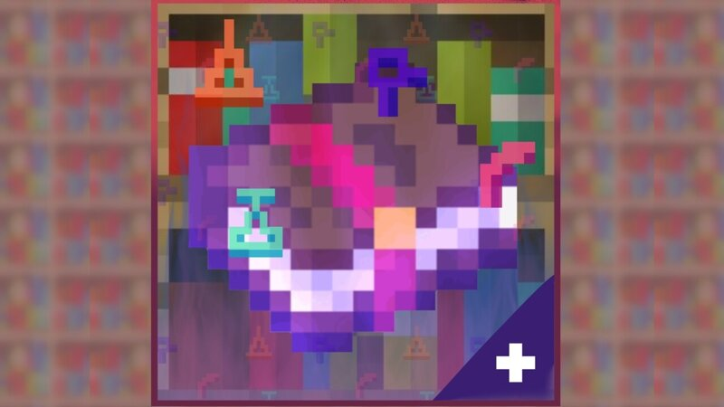

Pasatiempos
Resolver Puzzles
Afición en los cubos de rubik, rompecabezas y entre otras actividades del tipo.
Ciclismo
Bajo las condiciones favorables, recorridos no tan extensos, ni que requieran de alto desempeño.

Videojuegos
Ocasionalmente por cortos periodos cuando hay la posibilidad de jugar con amigos.
Formación Académica
ISM
Vida estudiantil desarrollada en su mayoría dentro del campus Quito, culminación de estudios en la modalidad Online.
ESPE
Comienzo de estudios universitarios en 2022 para la carrera de ingeniería de software. Actualmente cursando 5to semestre.

Proyectos
Technical Enchant+
Datapack (mod) realizado para el videojuego Minecraft, que enriquece el sistema de encantamiento base. Permitió conocer conceptos fundamentales de lógica de programación y diseño de gameplay.
Organivent
Pequeño sistema desarrollado para la gestión y supervisión de personal, equipos y lugares para concertos. El programa permite administrar costos entre cada uno de los componentes clave para llevar a cabo este tipo de eventos.
Habilidades